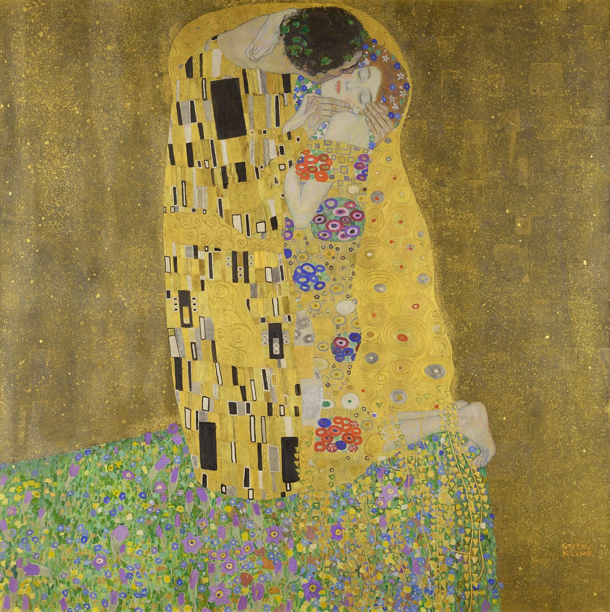

← 藝術101名畫背後的故事 EP10
吻
古斯塔夫・克林姆・1907–1908

這幅畫上，真的貼了金箔。
金匠的兒子
克林姆的父親是專做黃金雕刻的工匠，他從小就在金子旁長大。1903年，他到義大利拉溫納，看見拜占庭教堂的金色馬賽克，從此進入了自己的「黃金時期」。
貼在畫布上的金
《吻》畫於1907到1908年，180公分見方，克林姆把真的金箔、銀箔直接貼上畫布。1908年在維也納藝術展首次展出，還沒完全完成，奧地利政府就以兩萬五千克朗買下，今天掛在維也納美景宮。
方塊和圓圈
看左邊男人的長袍，是黑白相間的長方形；右邊女人的衣服，則是圓圈和彩色花朵，有學者認為這是在對比男性與女性。再往右下看，她的腳趾勾在花草地的邊緣，下面什麼都沒有。
下次看到它，先看這裡
男人長袍的黑白方塊 直線條的黑白長方形，代表男性的剛硬
女人衣服的圓圈與花 圓圈、彩色花朵，與男人形成對比
勾住邊緣的腳趾 腳趾緊勾花草地邊緣，下方一片空無
作品資料
古斯塔夫・克林姆（Gustav Klimt）
《吻》The Kiss，1907–1908
油彩、金箔、銀箔、畫布 180 × 180 cm
維也納美景宮美術館（Belvedere）
《吻》The Kiss，1907–1908
油彩、金箔、銀箔、畫布 180 × 180 cm
維也納美景宮美術館（Belvedere）